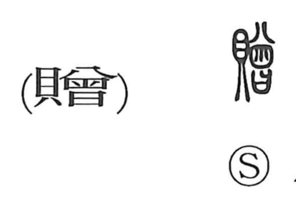

贈

Kun: okuru | On: zou, sou
to present ・ gift ・ to bestow
Explanation
贈 is a phono-semantic character. Its phonetic is 會 (later 曽), originally the image of a koshiki—stacked steaming baskets set over a pot—which conveys the idea of piling up. Combined with the shell/valuables element, it expresses adding something on top of what one gives: an extra gift, hence “to present.” Classical rites preserve this nuance in phrases such as 堂贈, a formal presentation in the main hall, and 賻贈, offerings sent to the dead—acts of gifting shells or goods meant to avert ill influences.